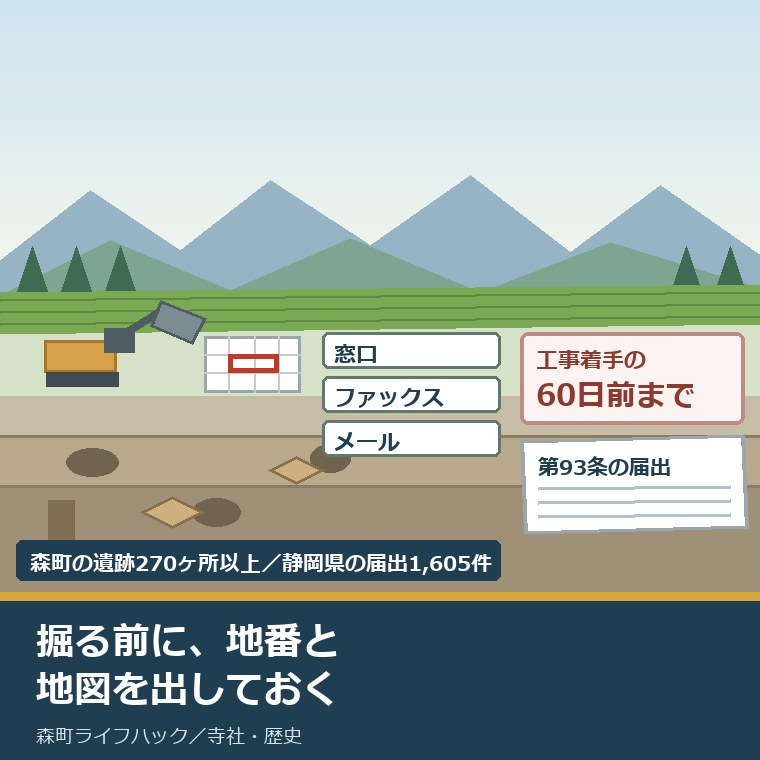
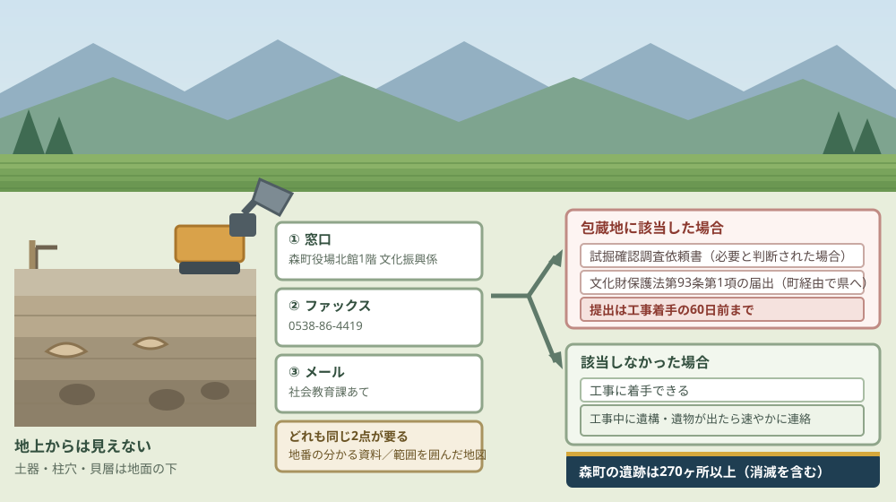
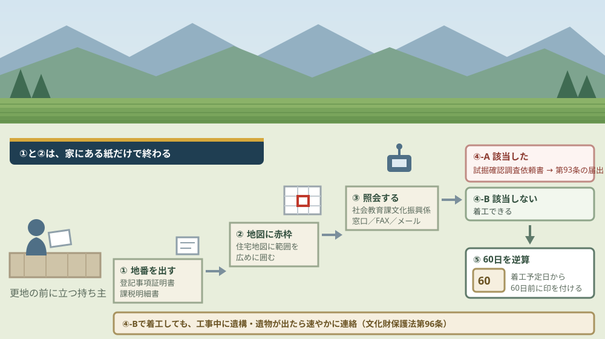

森町の埋蔵文化財包蔵地、掘る前の照会と調査費の負担

この記事の要点
Q. 森町の土地に家を建てます。埋蔵文化財の調査で止まることはありますか。
A. あります。まず掘る前に照会してください。森町役場の社会教育課文化振興係（0538-85-1114）へ、地番の分かる資料と範囲を囲んだ住宅地図を出します。包蔵地なら、工事着手の60日前までに文化財保護法第93条の届出が要ります。森町の遺跡は消滅したものを含め270ヶ所以上です。
静岡県周智郡森町（遠州森町）の土地に、家を建てる。あるいは、建物を壊して更地にして売る。この記事は、その手前にいる土地の持ち主に向けて書いています。
森町公式は、はっきり書いています。「森町内での開発が計画されたら開発の大小に関係なく、その土地に埋蔵文化財が包蔵されているかの有無を確認したうえで、必要な手続きを行ってください」。
開発の大小に関係なく。母屋の建て替えでも、物置の基礎でも、同じ照会が要るという書き方です。
文化庁によれば、周知の埋蔵文化財包蔵地は全国で約46万カ所あります。森町では、消滅した遺跡を含めて270ヶ所以上が確認されています。
今日は2026年8月26日。照会の方法、60日という期限、そして調査費を誰が払うのかを順に並べ、最後に今日できる一歩を書きます。
公式情報から確定できること
2026年8月26日時点で、森町公式・文化庁の公表資料・文化財保護法の条文から確認できたことを並べます。手続きの名前は、埋蔵文化財の照会と、文化財保護法第93条第1項の届出です。出典は記事の末尾に載せています。
一つ目。埋蔵文化財とは、土地に埋蔵されている文化財のことです。森町公式の「埋蔵文化財の取り扱いについて」（2025年10月9日更新）は「主に遺跡といわれている」と補足しています。
二つ目。森町では270ヶ所以上が確認されています。同じページは「森町では270ヶ所（消滅した遺跡を含む）以上確認されています」と記しています。
三つ目。照会は開発の大小を問いません。同じページは「森町内での開発が計画されたら開発の大小に関係なく、その土地に埋蔵文化財が包蔵されているかの有無を確認したうえで、必要な手続きを行ってください」と案内しています。
四つ目。照会の方法は3つです。同じページによれば、窓口、ファックス、メールのいずれかで社会教育課文化振興係に連絡します。
五つ目。窓口は森町役場北館の1階です。同じページは、森町役場北館（森町森92-1）1階の社会教育課文化振興係へ、対象地の地番が分かる資料と対象地の範囲を囲んだ住宅地図等を持参するよう案内しています。
六つ目。ファックスは0538-86-4419です。同じページによれば、照会者の氏名、連絡先、対象地の地番を明記し、範囲を囲んだ住宅地図等を添えて送ります。
七つ目。メールでも受けています。同じページは、同じ内容を社会教育課のアドレス（kyo_syakai@town.shizuoka-mori.lg.jp）へ送る方法を案内しています。県外にいる持ち主でも、地番と地図があれば動けます。
八つ目。取り扱いのフロー図がPDFで公開されています。同じページに「埋蔵文化財取り扱いフロー図（PDFファイル: 301.4KB）」が置かれています。
九つ目。該当した場合、まず試掘確認調査があります。同じページによれば、遺跡の所在の可能性がある場所や不明な場所について確認調査が必要だと判断した場合、試掘確認調査依頼書を提出することで遺跡の所在を確認します。様式はWordとPDFで公開されています。
十番目。届出は工事着手の60日前までです。同じページは、包蔵地範囲内で工事に伴う掘削作業を行う場合、確認調査が不要な場合または試掘確認調査結果後に、文化財保護法第93条第1項に基づく届出を工事着手の60日前までに町教育委員会経由で県へ提出することが義務づけられていると記しています。
十一番目。60日は法律の数字です。文化財保護法第93条第1項は、周知の埋蔵文化財包蔵地を発掘しようとする場合に第92条第1項を準用し、「三十日前」とあるのを「六十日前」と読み替えると定めています。
十二番目。届出書の様式も町が公開しています。森町公式の同じページに、埋蔵文化財発掘の届出書（文化財保護法第93条）と別紙（法第93条第1項関係）が、それぞれWord・PDF・記入例のPDFで置かれています。
十三番目。該当しなかった場合は着工できます。同じページは「工事に着手してください」としたうえで、「ただし、工事中に遺構・遺物等が発見された場合は速やかに社会教育課文化振興係(0538-85-1114)にご連絡ください」と付けています。
十四番目。工事中に見つけた場合は法律上の届出義務があります。文化財保護法第96条第1項は、土地の所有者または占有者が遺跡と認められるものを発見したとき、その現状を変更することなく、遅滞なく文化庁長官に届け出なければならないと定めています。
十五番目。その場合、工事の停止を命じられることがあります。同じ法の第96条第2項は、届出に係る遺跡が重要で保護のため調査が必要と認めるときに、期間と区域を定めて現状変更となる行為の停止または禁止を命じることができるとしています。期間は3月を超えられません。
十六番目。延長されても通算6月までです。同じ条の第5項は、期間内に調査が完了しない場合に1回に限り延長できるとし、通算して6月を超えられないと定めています。
十七番目。停止命令による損失は国が補償します。同じ条の第9項は「第二項の命令によつて損失を受けた者に対しては、国は、その通常生ずべき損失を補償する」と定めています。
十八番目。周知の埋蔵文化財包蔵地は全国で約46万カ所です。文化庁の「埋蔵文化財」のページの数字です。
十九番目。調査費は原則として事業者負担です。同じページは、発掘調査について「開発事業者に協力を求めています（事業者負担）」と記しています。根拠となる文化財保護法第99条第2項は、地方公共団体は発掘に関し事業者に対し協力を求めることができると定めています。
二十番目。個人の住宅には公費の制度があります。同じ文化庁のページは「ただし、個人が営利目的ではなく行う住宅建設等、事業者に調査経費の負担を求めることが適当でないと考えられる場合には、国庫補助等、公費により実施される制度があります」と記しています。
二十一番目。令和6年度の届出は、全国で71,352件です。文化庁の埋蔵文化財関係統計資料（令和8年3月・令和7年度版）の表8にある、法第93条・94条に基づく土木工事の届出等の件数です。
二十二番目。静岡県は1,605件でした。同じ表の静岡県の欄です。平成25年度の958件から、12年で1.7倍に増えています。
二十三番目。届出の36.0パーセントは個人住宅です。同じ資料の表10によれば、令和6年度の全国71,352件のうち個人住宅が25,676件で36.0パーセント。次いで住宅が8,077件で11.3パーセントです。
二十四番目。静岡県でも個人住宅が最多です。同じ表10の静岡県の内訳は、個人住宅514件、その他建物174件、住宅101件、宅地造成77件、道路29件などです。
二十五番目。発掘調査の届出等は、静岡県で161件でした。同じ資料の表9にある令和6年度の数字です。全国は7,016件です。
二十六番目。静岡県の調査費は、令和6年度で6億4,194万6千円です。同じ資料の表16によれば、開発事業にともなう緊急発掘調査の費用は、試掘確認調査が73,133千円で338件、本発掘調査が568,813千円で41件、合計641,946千円で379件です。
二十七番目。負担者別に見ると、個人住宅の欄は0です。同じ資料の表18によれば、令和6年度の静岡県で開発事業にともなう本発掘調査費を負担した区分は、省庁219,690千円、市町村184,753千円、中小企業50,964千円、組合42,532千円、都道府県41,100千円、個人事業18,568千円などで、「個人住宅」の欄は0千円です。
二十八番目。工事中の遺跡発見の届出は、静岡県で10件ありました。同じ資料の表13にある令和6年度の数字です。令和5年度は0件、令和4年度は1件でした。全国は147件です。
二十九番目。森町の計画にも埋蔵文化財の項目があります。森町文化財保存活用地域計画の報道資料（2026年8月6日公開）の取組7「埋蔵文化財の詳細調査」は、開発等の計画に関連する埋蔵文化財について優先的に試掘等の詳細調査を実施するとしています。計画期間は令和8年度から17年度です。
三十番目。森町の面積は133.91平方キロメートルです。同じ報道資料の数字です。270ヶ所を面積で割ると、1平方キロメートルあたり2ヶ所という密度になります。

この絵で描きたかったのは、左の断面が地上から見えないという点です。更地に立って眺めても、包蔵地かどうかは分かりません。地番を紙に書いて出すまで、誰にも分かりません。
もう一つ描いたのは、下の道にも注意書きが付いていることです。該当しないという答えをもらっても、工事中に出てきたら止まります。法律上の届出義務は、そこにも残っています。
森町の土地に置き換えると、何が起きるか
ここからは、公表された数字を森町の一筆に割り戻します。私の計算であることを先に断っておきます。
まず、時間です。60日は約2か月。試掘確認調査が入る場合、その日程が60日の前に積み上がります。
私の商売の感覚では、更地を売る話は「いつ引き渡せるか」で決まります。2か月は、住宅ローンの実行日にも、売買契約の引渡し期日にも直接ぶつかる長さです。
次に、費用です。静岡県の試掘確認調査は73,133千円で338件。1件あたり平均21万6千円です。本発掘調査は568,813千円で41件、1件あたり平均1,387万円になります。
この二つの桁の差が、この記事でいちばん伝えたい数字です。試掘で終われば数十万円、本発掘に進めば1千万円台。間に線が一本引かれています。
ただし、平均は平均です。大規模な道路や造成の調査が平均を押し上げているのは間違いありません。個人の宅地1筆でこの額になるという意味ではありません。
そこで、負担者の表を見ます。令和6年度の静岡県で、本発掘調査費を「個人住宅」の区分が負担した額は0千円でした。届出は514件あったのに、費用の欄にはゼロが並んでいます。
ここは推測を交えて書きます。個人住宅の届出の多くは本発掘調査に至らず、至った場合も公費で実施されているのだと私は読みました。統計はそこまで説明していないので、確定ではありません。
もう一つ、割合を出します。令和6年度の静岡県は、届出1,605件に対して発掘調査の届出等が161件。同じ年度の数字を並べると、およそ10対1です。全国も71,352件に対して7,016件で、ほぼ同じ比率でした。
この二つは根拠となる条文が違うので、そのまま「10件に1件が調査になる」とは言えません。それでも、届出のすべてが発掘調査に化けるわけではないことは読み取れます。
森町の地形を思い浮かべると、この数字は納得がいきます。太田川沿いの平地と、山際の台地。古墳や横穴は、その境目に集まります。分布の実際は森町の古墳分布から六地区の古代地形を読んだ記事に整理しました。
社寺の近くも、要注意の場所です。境内地の隣に土地を持つと、掘る前の確認が一つ増えます。その考え方は国指定の舞楽が三件ある町で社寺の隣に土地を持つことを書いた記事にまとめています。
照会に要る「地番の分かる資料」は、境界の話と地続きです。地番が分かっても、現地のどこまでが自分の土地かは別問題です。森町での確かめ方は畑と山の境界を地籍調査の成果で確かめる記事に書きました。
建てるのではなく残す道を考えている方は、別の入口もあります。古い建物そのものを登録する制度です。その基準と数字は登録有形文化財15,041件と森町の古民家を登録する条件について書いた記事にあります。
町全体の文化財の枠組みは、2026年7月に一段変わりました。10年間の計画が動き出しています。中身は森町文化財保存活用地域計画が2026年7月に認定されて何が変わるかを書いた記事にまとめました。
良い点：森町のこの案内の、よくできているところ
まず、森町の埋蔵文化財の案内でよくできているところを数えます。注文の前に置くのが、私の書き方の順番です。
一つ目。照会をメールで受けています。県外に住む相続人が、地番と住宅地図の画像だけで照会できる。これは、遠方の持ち主にとって往復1回分の価値があります。
二つ目。「開発の大小に関係なく」と書いています。小さい工事なら要らないだろうという自己判断を、この一行が止めます。逃げ道のない書き方を選んでいる点を、私は評価します。
三つ目。60日前という期限が本文に出ています。数字が本文にあるかないかで、事業者も持ち主も逆算できるかどうかが変わります。
四つ目。様式が全部そろっています。試掘確認調査依頼書、届出書、別紙、そして記入例。WordとPDFの両方が置かれ、届出書と別紙にはそれぞれ記入例が付いています。
五つ目。該当しなかった場合の注意まで書いています。「工事中に遺構・遺物等が発見された場合は速やかに」という一行があるおかげで、照会で終わりではないことが伝わります。ページは2025年10月9日に更新されています。
注文したい点：土地を持っている側から見て足りないところ
その上で、一事業者として注文したい点を並べます。社会教育課文化振興係が、文化財の管理も地域計画も埋蔵文化財の照会も同じ係で回していることは承知の上です。
一つ目。包蔵地の地図が公開されていません。2026年8月26日時点で、森町公式のページから遺跡の分布図は開けません。270ヶ所以上という数だけが示されています。買う前に自分で当たりを付けたい人が、当たりを付けられません。
二つ目。照会の回答までの日数が書かれていません。60日前という期限は示されていますが、照会を出してから答えが返るまでの目安がない。逆算の起点が決められません。
三つ目。試掘確認調査の費用負担が書かれていません。文化庁のページには事業者負担の原則と公費の制度が並んでいますが、森町のページには費用の記載がありません。個人住宅ならどうなるのかを、照会の前に知りたい人は多いはずです。
四つ目。試掘の日程の目安がありません。依頼書を出してから試掘に入るまで、そして結果が出るまでにどれくらいかかるのか。ここが読めないと、売買契約の引渡し期日を決められません。
五つ目。不動産取引の場面への案内がありません。包蔵地かどうかは、重要事項説明で買主に伝える事柄です。売主が売る前に照会しておけば話が早いのに、そのことがページのどこにも書かれていません。

対案・結論：今日、土地の持ち主が確かめられること
結論を急がないと決めたうえで、今日から動ける順番を書きます。順番はイラストのとおりです。
| 順番 | 確かめること | 確認先 |
|---|---|---|
| 1 | 対象地の地番。登記事項証明書か固定資産税の課税明細書に載っている | 手元の書類。無ければ法務局と森町役場税務課 |
| 2 | 住宅地図に対象地の範囲を赤枠で囲む。飛び地や別筆がないか | 手元の地図と公図。範囲は広めに囲んでおく |
| 3 | 埋蔵文化財包蔵地に該当するか照会する | 森町役場 社会教育課文化振興係 0538-85-1114／ファックス0538-86-4419／メール |
| 4 | 該当した場合、試掘確認調査が要るか。要る場合の費用と日程 | 同じ係。自宅を建てるのか売るための造成かを必ず伝える |
| 5 | 工事着手日から60日を逆算する。届出は町教育委員会経由で県へ | 手元のカレンダー。着工予定日から60日前に印を付ける |
| 6 | 売る予定なら、照会の回答を書面で残す。重要事項説明の材料になる | 仲介する宅地建物取引業者。買主に伝える事柄です |
1は、今日できます。探すのは1枚です。登記事項証明書か、固定資産税の課税明細書。地番が分からないと、照会そのものが始まりません。
2も、今日できます。住宅地図をコピーして、対象地を赤枠で囲むだけです。囲む範囲は迷ったら広めにしてください。後から広げるより手戻りが少なくて済みます。
3は、メールなら夜でも送れます。氏名、連絡先、地番、範囲を囲んだ地図。この四つがそろえば送れます。森町へ行かずに済む唯一の段です。
4で、話の性格が変わります。自宅を建てるのか、売るために造成するのか。ここで用途を伝えてください。文化庁の考え方では、この違いが費用の扱いに関わります。
5は、カレンダーの作業です。着工したい日に印を付け、そこから60日前にもう一つ印を付ける。基礎工事の日程を組む前にやってください。
6は、売る場合の話です。照会の回答は、買主に伝える材料になります。売主の側で先に取っておくと、契約の直前に話が止まりません。
家族に残す記録
ここからは、確認した内容を紙1枚に残すための項目です。相続人が複数いる場合、同じことを何度も照会しないためのものです。
書き留めるのは、対象地の地番と地目と面積、照会した日と方法、回答の内容、包蔵地に該当するかどうか、遺跡の名前、試掘確認調査の要否、確認した日付です。この8つで、次に誰が動いても同じ場所から始められます。
あわせて、土地の名義、境界標の有無、接する道路の種別と幅員、農地かどうか、過去に建物が建っていたか、造成や埋め立ての履歴、隣地との越境を並べておきます。埋蔵文化財の照会は掘る前の一項目ですが、掘る前に確かめることは他にもあります。
実家の名義、境界、農地、道路まで含めて順に整理したい方は、ふじがおか実家カルテの森町相談窓口もご利用ください。住所が分かれば、建物と敷地のどちらについても、確認する順番を整理できます。
大石の視点
ここからは、私（大石浩之）の個人の考えです。公的な事実とは分けてお読みください。私自身が森町で埋蔵文化財の照会に立ち会った経験があるわけではありません。以下は、町の案内と条文と統計を、段取りと家計の目で読んだ私の見方です。
最初に、言い切っておきます。埋蔵文化財の照会は、掘る前ではなく、買う前・売る前にやる作業です。掘る前では遅い場面が、私の商売では何度も出てきます。
理由は、期日です。60日という期限は、売買契約の引渡し期日の中に収まる長さではありません。契約してから照会して該当が判明すると、引渡しが2か月動きます。
私が引っかかったのは、費用の桁でした。静岡県の試掘確認調査は1件平均21万6千円、本発掘調査は1件平均1,387万円。この二つの間に、境界線が一本あります。
ただし、その線の向こう側に個人がどれだけ行くのかは、統計からは読めません。令和6年度の静岡県で、本発掘調査費を「個人住宅」の区分が負担した額は0千円でした。届出は514件です。
この0を、私は「個人の家は本発掘まで行かないか、行っても公費で実施されている」と読みました。ただ、それが森町でもそうだとは限りません。ここは推測であって、確かめられていません。
だから、照会のときに用途を伝えてくださいと書きました。「自分たちが住む家を建てます」と「更地にして売ります」は、費用の扱いが違いうるからです。言わなければ、相手には分かりません。
ここで、森町の側の話をします。まず認めたいのは、この案内の作り込みです。フロー図、試掘確認調査依頼書、届出書、別紙、記入例二つ。小さな町の一つの係が、これだけの様式を並べて公開しています。
2025年10月9日に更新されている点も見ておきたい。町の文化財のページが2019年3月から動いていないのに、埋蔵文化財のページは去年の秋に手が入っています。限られた人手を、開発が絡む側に振り向けた形です。
その上で、打開が要ると思う点を具体名詞で書きます。担い手と、地図です。
担い手。270ヶ所以上の遺跡を、照会も試掘も届出の進達も同じ係が受けている。森町文化財保存活用地域計画の課題にも、歴史文化・文化財の知識を有する町職員が不足していると書かれています。町が自分で書いているのだから、外から言うまでもありません。
地図。包蔵地の分布図が公開されていないことが、私にはいちばん惜しい。買う前に当たりを付けられれば、照会の件数そのものが減ります。係の負担を減らすのは、公開のほうです。
正直に書くと、ここで私は迷っています。分布図を公開すると、包蔵地の土地が売りにくくなるのではないかという心配があるからです。不動産を扱う立場としては、そこを無視できません。
ただ、隠して売れる話ではありません。包蔵地かどうかは、重要事項説明で買主に伝える事柄です。契約の直前に出るか、探し始めの段階で出るかの違いしかない。
だとすれば、早く出たほうがいい。買う人が知ったうえで値段と工程を組めるなら、そのほうが取引は壊れません。私はそう考えています。
行政に注文を付ける前に、自分の商売で同じことができるか考える。私も、調べれば分かることを買主に聞かれるまで出さなかったことがあります。先に出すのは、誰にとっても勇気が要ります。
一事業者としての要望は、二つです。照会の回答までの目安日数と、個人住宅の場合の費用の扱いを、ページに一行ずつ足してほしい。それだけで、土地の前で止まっている家族が動けます。
最後に、判断そのものについて。今日、建てるか売るかを決める必要はありません。ただ、地番の分かる紙1枚と、赤枠を入れた住宅地図だけは、今日のうちに作っておいてください。
この二つがあれば、照会はメール1通で出せます。結論が保留のままでも、確認済みの事実が一つ増えたなら、それは前進です。
まとめ
- 森町公式「埋蔵文化財の取り扱いについて」（2025年10月9日更新）によれば、森町では270ヶ所（消滅した遺跡を含む）以上の遺跡が確認されている
- 同じページは「森町内での開発が計画されたら開発の大小に関係なく」包蔵の有無を確認するよう案内している
- 照会は窓口（森町役場北館1階）・ファックス（0538-86-4419）・メール（kyo_syakai@town.shizuoka-mori.lg.jp）の3つ。いずれも地番が分かる資料と範囲を囲んだ住宅地図等が要る
- 該当した場合、必要と判断されれば試掘確認調査依頼書を提出して遺跡の所在を確認する
- 包蔵地範囲内で掘削作業を行う場合、文化財保護法第93条第1項の届出を工事着手の60日前までに町教育委員会経由で県へ提出する
- 文化財保護法第93条第1項は第92条第1項を準用し「三十日前」を「六十日前」と読み替えると定めている
- 該当しなかった場合は着工できるが、工事中に遺構・遺物等が発見されたら速やかに社会教育課文化振興係（0538-85-1114）へ連絡する
- 文化財保護法第96条第1項は、遺跡と認められるものを発見したとき、現状を変更せず遅滞なく文化庁長官へ届け出ることを所有者・占有者に義務づけている
- 同条第2項の停止命令は3月を超えられず、第5項により1回に限り延長できるが通算6月まで。第9項により国が通常生ずべき損失を補償する
- 文化庁によれば、周知の埋蔵文化財包蔵地は全国で約46万カ所
- 文化庁は調査費について「開発事業者に協力を求めています（事業者負担）」としつつ、個人が営利目的ではなく行う住宅建設等には「国庫補助等、公費により実施される制度があります」と記している
- 文化庁の埋蔵文化財関係統計資料（令和8年3月）によれば、令和6年度の土木工事の届出等は全国71,352件、静岡県1,605件（平成25年度は958件）
- 同じ資料によれば、令和6年度の届出の36.0パーセント（25,676件）が個人住宅で、静岡県でも個人住宅514件が最多
- 同じ資料によれば、令和6年度の発掘調査の届出等は全国7,016件、静岡県161件
- 同じ資料によれば、令和6年度の静岡県の開発事業にともなう緊急発掘調査費は、試掘確認調査73,133千円・338件、本発掘調査568,813千円・41件
- 私の計算では、静岡県の試掘確認調査は1件あたり平均21万6千円、本発掘調査は1件あたり平均1,387万円
- 同じ資料の負担者別の表で、令和6年度の静岡県の本発掘調査費のうち「個人住宅」の欄は0千円
- 同じ資料によれば、令和6年度の遺跡発見の届出等は静岡県10件（令和5年度は0件）、全国147件
- 森町文化財保存活用地域計画の報道資料によれば、取組7「埋蔵文化財の詳細調査」で開発等の計画に関連する埋蔵文化財の試掘等を優先的に実施する（計画期間 令和8～17年度）
よくある質問
Q1. 森町の土地が埋蔵文化財包蔵地かどうかは、どこで調べられますか。
A1. 森町役場の社会教育課文化振興係へ照会します。森町公式は窓口・ファックス・メールの三つの方法を案内しており、いずれも対象地の地番が分かる資料と、対象地の範囲を囲んだ住宅地図等が要ります。窓口は森町役場北館（森町森92-1）1階、ファックスは0538-86-4419、電話は0538-85-1114です。森町では消滅した遺跡を含めて270ヶ所以上が確認されています。
Q2. 包蔵地に当たった場合、工事はどれくらい先延ばしになりますか。
A2. 最短でも60日を見てください。森町公式によれば、包蔵地の範囲内で工事に伴う掘削作業を行う場合、文化財保護法第93条第1項に基づく届出を工事着手の60日前までに町教育委員会経由で県へ提出することが義務づけられています。試掘確認調査が必要と判断された場合は、その日程が60日の前に加わります。
Q3. 発掘調査の費用は土地の持ち主が払うのですか。
A3. 文化庁は開発事業者に協力を求める考え方（事業者負担）を示しています。ただし「個人が営利目的ではなく行う住宅建設等、事業者に調査経費の負担を求めることが適当でないと考えられる場合には、国庫補助等、公費により実施される制度があります」とも記しています。自宅を建てるのか売るために造成するのかで扱いが変わるため、照会の段階で用途を伝えてください。
最後に一つだけ。ここに書いた件数、期限、費用、照会の方法は、いずれも2026年8月26日時点で公表されている内容です。森町での照会から回答までの日数、試掘確認調査の費用を誰がどう負担するか、森町の年間の届出件数、包蔵地の分布図が公開される予定があるかは、公表資料からは確認できていません。土地を掘る前に、必ず森町役場の社会教育課文化振興係へご確認ください。
参考にした公式情報
- 埋蔵文化財の取り扱いについて／静岡県森町（「埋蔵文化財とは、土地に埋蔵されている文化財（主に遺跡といわれている）のことです。森町では270ヶ所（消滅した遺跡を含む）以上確認されています。」と記されていること、「森町内での開発が計画されたら開発の大小に関係なく、その土地に埋蔵文化財が包蔵されているかの有無を確認したうえで、必要な手続きを行ってください。」と案内されていること、「埋蔵文化財取り扱いフロー図 (PDFファイル: 301.4KB)」が掲載されていること、確認方法が窓口（森町役場北館（森町森92-1）1階社会教育課文化振興係／対象地の地番が分かる資料及び対象地の範囲を囲んだ住宅地図等を持参）・ファックス（0538-86-4419）・メール（kyo_syakai@town.shizuoka-mori.lg.jp）の三つであること、包蔵地に該当した場合に確認調査が必要と判断すれば試掘確認調査依頼書の提出により遺跡の所在を確認すること、試掘確認調査依頼書・承諾書がWordファイル（27.5KB）とPDFファイル（69.0KB）で公開されていること、「埋蔵文化財包蔵地範囲内において工事に伴う掘削作業を行う場合には、確認調査が不要な場合または試掘確認調査結果後、文化財保護法第93条第1項に基づく届出を工事着手の60日前までに町教育委員会経由で県へ書類を提出することが義務付けられています。」と記されていること、埋蔵文化財発掘の届出書と別紙（法第93条第1項関係）がそれぞれWord・PDF・記入例PDFで公開されていること、該当しなかった場合は「工事に着手してください。ただし、工事中に遺構・遺物等が発見された場合は速やかに社会教育課文化振興係(0538-85-1114)にご連絡ください。」とされていること、担当が社会教育課文化振興係（〒437-0215 静岡県周智郡森町森92-1、電話0538-85-1114）であることを2026年8月26日に確認。ページ更新日 2025年10月9日）
- 森町文化財保存活用地域計画の認定について／静岡県森町（「令和8年7月17日に開催された国の文化審議会文化財分科会の答申を受けて、文化庁長官により『森町文化財保存活用地域計画』が認定されました。」と記されていること、報道資料（PDFファイル: 1.9MB）と森町文化財保存活用地域計画本文（PDFファイル: 15.8MB）が掲載されていること、担当が社会教育課文化振興係（電話0538-85-1114）であることを2026年8月26日に確認。ページ更新日 2026年8月6日）
- 森町文化財保存活用地域計画 報道資料／静岡県森町（計画期間が「令和8～17年度（10年間）」、面積が133.91平方キロメートル、人口が約1.7万人と記されていること、取組7「埋蔵文化財の詳細調査」が「開発等の計画に関連する埋蔵文化財について、優先的に試掘等の詳細調査を実施する。」とされ取組主体に行政・専門家・所有者等・団体・町民が挙げられていること、課題として「民俗資料や埋蔵文化財資料等の中に、調査と整理が不十分なものがある。」「計画の実施にあたって、町民、団体、行政の連携と、歴史文化・文化財の知識を有する町職員が不足している。」が挙げられていること、大城戸遺跡の発掘調査が写真とともに紹介されていること、「指定等文化財１１６件、未指定文化財２,４１７件把握」（令和8年3月時点）と記されていることを2026年8月26日に確認）
- 埋蔵文化財／文化庁（周知の埋蔵文化財包蔵地が「全国で約46万カ所あり」と記されていること、周知の埋蔵文化財包蔵地での土木工事等について「文化財保護法93・94条」、新たに遺跡を発見した場合について「同法96・97条」が挙げられていること、発掘調査の費用について「開発事業者に協力を求めています（事業者負担）。ただし、個人が営利目的ではなく行う住宅建設等、事業者に調査経費の負担を求めることが適当でないと考えられる場合には、国庫補助等、公費により実施される制度があります」と記されていること、「埋蔵文化財関係統計資料（令和8年3月）」が掲載されていることを2026年8月26日に確認）
- 埋蔵文化財関係統計資料―令和7年度―（令和8年3月）／文化庁文化財第二課（表8「土木工事の届出等件数の経年変化」で令和6年度の合計が71,352件、静岡県が1,605件（平成25年度958件）であること、表9「発掘調査の届出等件数の経年変化」で令和6年度の合計が7,016件、静岡県が161件であること、表10「令和6年度 土木工事の届出等の開発事業種別件数」で個人住宅が25,676件・36.0パーセント、住宅が8,077件・11.3パーセントであり静岡県の内訳が個人住宅514件・その他建物174件・住宅101件・宅地造成77件・道路29件であること、表13「遺跡発見の届出等件数の経年変化」で令和6年度の合計が147件、静岡県が10件（令和5年度0件・令和4年度1件）であること、表16「令和6年度 発掘調査費用の総括表」で静岡県の開発事業にともなう緊急発掘調査が試掘確認調査73,133千円・338件、本発掘調査568,813千円・41件、合計641,946千円・379件であること、表18「令和6年度 開発事業にともなう本発掘調査費（負担者別）」で静岡県の内訳が都道府県41,100千円・県文化財保護部局1,445千円・市町村184,753千円・市文化財保護部局3,618千円・省庁219,690千円・文化庁1,158千円・大企業4,259千円・中小企業50,964千円・組合42,532千円・個人事業18,568千円・その他726千円であり「個人住宅」の欄が0であることを2026年8月26日に確認）
- 文化財保護法（昭和二十五年法律第二百十四号）／e-Gov法令検索（第93条第1項が「土木工事その他埋蔵文化財の調査以外の目的で、貝づか、古墳その他埋蔵文化財を包蔵する土地として周知されている土地（以下「周知の埋蔵文化財包蔵地」という。）を発掘しようとする場合には、前条第一項の規定を準用する。この場合において、同項中「三十日前」とあるのは、「六十日前」と読み替えるものとする。」と定めていること、第93条第2項が文化庁長官による発掘調査の実施その他の指示を定めていること、第94条第1項が国の機関等について事業計画の策定に当たっての事前通知を定めていること、第95条第1項が国及び地方公共団体による周知の徹底の努力義務を定めていること、第96条第1項が土地の所有者又は占有者に対し遺跡と認められるものを発見したときの「その現状を変更することなく、遅滞なく」の届出を義務づけていること、同条第2項の停止命令の期間が3月を超えられないこと、同条第5項により1回に限り延長できるが通算6月を超えられないこと、同条第9項が「第二項の命令によつて損失を受けた者に対しては、国は、その通常生ずべき損失を補償する」としていること、第99条第1項が地方公共団体による発掘の施行を、同条第2項が「地方公共団体は、前項の発掘に関し、事業者に対し協力を求めることができる」と定めていることを2026年8月26日に確認）

最終確認日：2026-08-26 ／ 本記事は公表情報と執筆者の見解を分けて記載しています。森町での照会から回答までの日数、試掘確認調査の費用の負担、森町の年間の届出件数、包蔵地の分布図の公開予定は、公表資料から確認できていません。統計の1件あたり平均は執筆者が総額を件数で割った概算で、個別の土地の費用を示すものではありません。制度・数値は変更されることがあります。土地を掘る前に、必ず森町役場の社会教育課文化振興係へご確認ください。